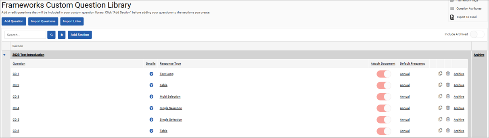
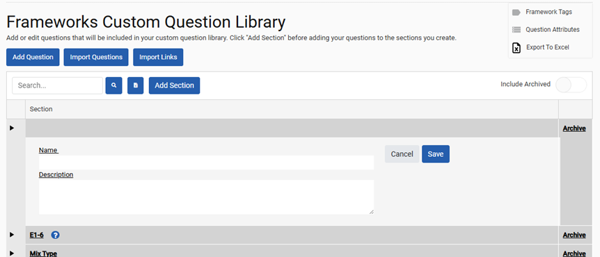
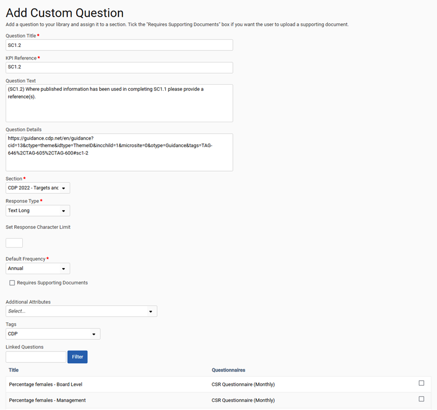
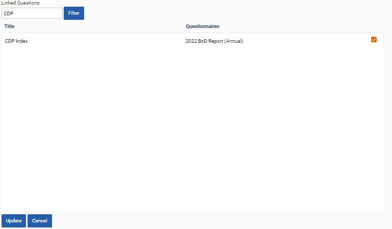

The custom question library can be used to review, edit or create questions which can later be added to questionnaires. To access this page click ‘Frameworks > Settings > Custom Question Library’.
In the custom question library, sections can be viewed within the table and can be archived using the archive button on the right-hand side. Alternatively, the questions which make up a section can be viewed by clicking the arrow icon to the left of the section name. Finally, the search bar at the top of the table can be used to search for questions with a particular question title.

Sections
Questions are allocated to sections. Sections relate to the tabs of the input section which make up a questionnaire. To add a new section, click ‘Add Section’. Enter a name and description and click on ‘Save’ to finalize its creation. Sections can also be created during the bulk upload of questions, which is outlined in more detail below.

Add Question
To add a new question, click ‘Add Question’. All marked fields should be completed before clicking ‘Save’. Response Type is the type of answer that the question will require from users.
Alternatively, questions can be added in bulk by using the Custom Question Import template and selecting ‘Import Questions’. When uploading questions, you can set the Attach Document toggle for each question in the template. This toggle can be changed for individual questions after they are uploaded.
To request an import template submit a support ticket via the Cority Community by navigating to the Contact Support – Submit a Ticket page. If you’re not sure you have a Cority Community user account that allows you to submit support tickets, need access to the Cority Community to submit support tickets, are not able to log in to Cority Community, or are not able to submit a support ticket once you log in to Cority Community, please email community@cority.com.

The fields available in a custom question include the following.
| Field | Explanation |
| Question Title | The question itself. This text is most easily visible when viewed as an input user. |
| KPI Reference | A unique identifier used for uploads via SFTP and for adding columns to a table via Import Questions |
| Question Text | Question guidance available in a pop-up in the inputs section. |
| Question Details | Additional question guidance available in a pop-up in the inputs section. |
| Section | The tab or grouping under which the question should appear in inputs. |
| Response Type | The type of question, for example, long text, short text, number, etc. Please see the section below for additional details. |
| Temporal Aggregation Method | This can be used for number aggregations. The values that can be selected for aggregation are based on the response type, as follows:
When displayed, this field is mandatory. |
| Hierarchy Aggregation Method | This can be used for number aggregations. The values that can be selected for aggregation are based on the response type, as follows:
When displayed, this field is mandatory. |
| Default Frequency | The intervals in which questions will be asked by default. For example, monthly for one response per month or quarterly for 1 response per quarter. |
| Requires Supporting Documents | Switching this on makes uploading an attachment mandatory. |
| Additional attributes | Allows additional meta-data surrounding a response to be collected. Attributes can be set up in the custom question library by selecting the Question Attributes button. |
| Tags | A trend or theme across multiple questions that will be used for analytical purposes. Please see the tagging section below for details. |
| Linked Questions | A section in which similar questions can be identified. Responses from linked are made available in the inputs section when answering a questionnaire. Please see the section below for details. |
A variety of response types are available in frameworks.
| Response Type | Explanation |
| Computational | Computational questions allow calculations to be completed using the responses from other numerical questions. This means that the answer to a question can be auto-populated. |
| Cost | For use when collecting data relating to a monetary value. |
| Date | A single date picker is available in the inputs section. Dates have YYYY/MM/DD formatting. |
| Date Range | Two date pickers are available in the inputs section. Dates have YYYY/MM/DD formatting. |
| Multi Selection | Users in the inputs section can select one or more response from a list of user defined options. |
| Single Selection | Users in the inputs section can select a single response from a list of user defined options. |
| Number | For collecting numerical data with up to 6 decimal places. |
| Percentage | For collecting percentage type data. |
| Table | A table is made available in the inputs section, to which multiple rows can be added. Different response options can be selected for each column. Dependencies between columns can be created when configuring the question in the custom question library. |
| Text Long | A free text field with a character limit of 5,000. A reduced character limit can be imposed by using the character limit “Set Response Character Limit” field in the custom question library. |
| Text Short | A free text field with a character limit of 500. |
| URL | For collecting information on a URL from an input user. |
| Yes/No | For collecting binary (yes/no) data. |
Linking Questions
Questions can be linked to allow responses to be transferred from similar questions when answering a questionnaire. To link a question, please navigate to ‘Frameworks > Settings > Custom Question Library’, select the question you would like to link and click edit.
Use the filter box to search for the question you would like to link to and select it using the box on the right-hand side. Once you are finished creating links, click on the “Update” button.
